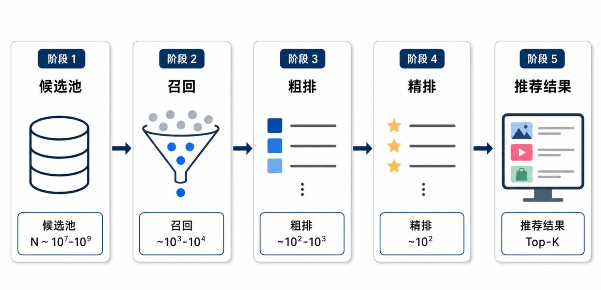

生成式推荐：从自回归到端到端的序列生成
当推荐系统学会"生成"而非"匹配"，会发生什么？本文系统梳理 SASRec、BERT4Rec、TIGER、HSTU、HLLM、OneRec、MiniOneRec 等生成式推荐相关工作，揭示从自回归到端到端的生成式推荐技术演进路径。
1. 从"打分"到"生成"——推荐范式的转变
1.1 传统推荐的瓶颈
长期以来，推荐系统的核心范式是打分（Scoring）——给定用户特征和候选物品，通过一个判别模型预测点击/转化概率。这种方式催生了召回→粗排→精排的多级级联架构：
- 召回（Recall）：从百万级候选库中快速拉回千级相关候选
- 粗排（Pre-Ranking）：对召回结果做初步排序
- 精排（Ranking）：综合多目标（点击、时长、互动等）做最终决策

这套架构的问题在于：
- 各阶段独立优化，目标可能不一致，甚至相互冲突，导致整体未必最优
- 强依赖 ID Embedding，召回I2I、用户行为序列建模等都依赖物品ID，冷启动场景表现差
- 逐-item 判别，无法建模 item 之间的依赖关系，而实际推荐结果是一个序列，物品之间会相互影响
- 算力效率低，精排模型的 MFU（模型浮点运算利用率）长期在个位数徘徊
1.2 生成式推荐的核心理念
生成式推荐将推荐问题重新建模为序列生成任务——不再逐个 item 打分，而是让模型直接生成下一个（或多个）推荐结果。
这背后的思想来自 NLP 领域：当 GPT 能够逐 token 生成文本时，为什么不能逐 item 生成推荐列表？
从 SASRec 到 OneRec，我们看到了这条技术路径的完整演进：
- 自回归生成（SASRec、BERT4Rec）：用 Next Token Prediction 替代点估计
- 语义 ID 生成（TIGER）：把item ID 替换为有语义的离散 token
- 大模型赋能（HSTU、HLLM）：将异质特征统一建模，验证 Scaling Law
- 端到端统一（OneRec、MiniOneRec）：彻底打破召回→精排级联，一个模型输出整个推荐列表
2. 自回归路线——SASRec
论文：Self-Attentive Sequential Recommendation, ICDM 2018
引用：Wang-Cheng Kang, Julian McAuley. arXiv:1808.09781
2.1 动机：平衡稀疏与稠密数据
传统序列推荐方法面临两难：
- 马尔可夫链（MC）：在稀疏数据上表现好（仅依赖最近 1-2 个行为），但无法捕捉长期依赖
- RNN：在稠密数据上效果好，但训练慢、难以并行
SASRec 的目标是：在稀疏和稠密数据集上都能捕捉长期语义，同时保持基于少量 action 做预测的能力。
2.2 核心架构：因果 Transformer
SASRec 的核心是将 Transformer 的 self-attention 机制引入序列推荐，但做了关键的因果性改造。

如图所示，SASRec 由以下部分组成：
（1）Embedding Layer
输入为用户交互的 item 序列 ，如果序列长度超过则做截断，如果长度小于，则通过padding零向量的方式补齐。再通过 item embedding 矩阵 将每个 item 映射为向量。同时引入可学习的位置 embedding ，让模型感知序列中 item 的顺序。最终的输入表示为：
（2）Self-Attention Block
标准的 Scaled Dot-Product Attention：
关键改造是因果掩码（Causal Mask）：预测第 个 item 时，只能看到前 个 item 的信息，不能"偷看"未来。这是通过修改 attention 矩阵实现的——将 的位置置为 。
（3）Point-wise Feed-Forward Network
每个位置独立经过两层 DNN，增加非线性表达能力：
（4）Stacking & Normalization
与标准 Transformer 一样，使用残差连接和 Layer Normalization 稳定训练。多层堆叠能让模型学习更复杂的行为转移模式。
（5）Prediction Layer
最终取序列 Encoder 最后一个位置的输出 hidden state（包含完整历史上下文的 context embedding，记为 ），与所有候选 item 的 embedding 做内积，得到下一个 item 的预测分布：
使用共享的 item embedding（输入输出共用 ），实验证明这能显著提升效果。
2.3 训练目标
标准负采样交叉熵损失：
2.4 效果与局限
实验在 Amazon（Beauty、Games）、Steam、MovieLens 数据集上进行，HR@10 和 NDCG@10 相比 MC/RNN/CNN 方法提升显著。
工业落地定位：SASRec 在工业界的实际用法与学术评估有所不同：
- 召回/粗排：SASRec 最常用于召回或粗排阶段。将用户序列的最后一个 hidden state 作为 query，通过 ANN（如 HNSW）等近似检索手段快速召回相关候选，避免遍历全量 item 做内积
- 精排：SASRec 的 embedding 也可以作为精排模型的额外输入特征（序列侧 user representation），而非直接承担精排打分职责——精排通常由含大量交叉特征（user×item）的 DeepFM、DIN 等模型完成
- 计算效率：内积打分在大候选集下延迟高，工业通常需要结合 ANN 近似检索或双塔结构优化
这种分工反映了一个通用规律：序列模型擅长捕捉行为模式，但不擅长处理高维交叉特征。因此工业上 SASRec 往往作为 user-side 的序列表征提供者，与精排模型协作，而非单独扛起推荐全流程。
局限：SASRec 是纯自回归的，预测时只能利用单向（从左到右）信息。用户的双向偏好信号（过去与未来的 item 都能暗示当前兴趣）被忽略了。这为 BERT4Rec 的诞生埋下了伏笔。
3. 双向化探索——BERT4Rec
论文：BERT4Rec: Sequential Recommendation with Bidirectional Encoder Representations from Transformer, CIKM 2019
引用：Fei Sun et al., Alibaba. arXiv:1904.06690
3.1 核心问题：单向结构的局限
SASRec 等自左向右的模型存在两个根本局限：
- 用户行为序列不需要严格有序：用户行为的时序不一定严格反映兴趣——比如三个口红无论什么顺序点击，推荐结果应该相似
- 单向结构限制表达能力：预测当前 item 时，无法利用序列中"后面" item 的信息
BERT 在 NLP 中证明了双向 Transformer 的强大，那能不能迁移到推荐系统？

3.2 训练目标：Cloze Task（完形填空）
如果直接训练双向 Transformer，信息泄露是最大问题——预测某个 item 时，模型可以直接看到它的真实值。BERT 解决这个问题的方法是Masked Language Model（MLM），BERT4Rec 将其引入推荐系统：
随机遮盖序列中一定比例（如 15%）的 item，用双向 Transformer 的输出预测被遮盖的 item。训练时不使用 [CLS] 分类 token，而是对每个位置做 item 预测。

Cloze Task 的优势：
- 避免了信息泄露——被遮盖 item 的真实值不出现在输入中
- 每个序列可以产生多个训练样本（随机遮盖位置不同），数据利用率高
- 双向 attention 能同时利用左右上下文
3.3 推理：转换为自回归生成
BERT4Rec 训练时用 Cloze Task，但推理时需要做生成——预测下一个推荐的 item。论文采用了一种巧妙的策略：
- 在序列末尾添加一个特殊 token
[mask] - 用训练好的双向 Transformer 处理序列
- 取出
[mask]位置的输出向量 - 预测下一个 item
可以看到，推理时是从左到右逐个生成的，这与 SASRec 的解码方式一致。但训练时的双向上下文让 BERT4Rec 学到了比 SASRec 更丰富的序列表示。
3.4 架构细节
- 位置编码：使用可学习的位置 embedding（而非 Transformer 原版的固定三角函数），在推荐数据上效果更好
- 激活函数：用 GELU 替代 ReLU（与 BERT 一致）
- Layer Normalization：确保深层堆叠时训练收敛
3.5 效果与意义
BERT4Rec 在 Beauty、Steam、MovieLens 数据集上显著超越 SASRec 等单向模型，证明了双向表示对序列推荐的价值。
核心贡献：首次将完形填空训练目标引入推荐系统，打通了 NLP 预训练模型（BERT）与推荐系统的桥梁。后续大量工作（如 BERT4Rec 的各种变体、S3-Rec 等预训练推荐模型）都建立在这一思路之上。
4. Token 化一切——TIGER
论文：Recommender Systems with Generative Retrieval, NeurIPS 2023
引用：Shijie Geng et al., Google DeepMind. arXiv:2305.05065
4.1 生成式检索的核心理念
SASRec 和 BERT4Rec 的预测目标仍然是"预测下一个 item 的概率分布"，最终依赖候选集上的排序打分。TIGER 提出了一个更激进的问题：
能不能让模型直接"生成"目标物品的标识符，而不是在候选集中做匹配？
传统推荐依赖"用户向量 - 物品向量"的近邻搜索（ANN/MIPS），存在以下问题：
- 依赖独立的 item embedding 表和 ANN 索引
- item ID 是随机的原子 ID，没有语义
- 冷启动物品难以推荐
- 流行度偏置和反馈闭环
TIGER 的解决方案：用语义化的离散 token 表示物品，用 Transformer 直接生成下一个物品的 token 序列。
4.2 Semantic ID：让物品 ID 有语义
TIGER 的核心创新是Semantic ID（语义 ID）——不再是随机的原子 ID，而是由多个离散 token 组成的、有语义结构的表示。

Semantic ID 的生成使用 RQ-VAE（Residual Quantized VAE）：
-
物品内容编码：用预训练文本编码器（如 Sentence-T5）把物品的标题、品牌、价格、类别等文本转为 768 维语义向量
-
残差量化：将连续向量量化为多级离散 codeword
- 第 1 层：在 codebook 中找到最接近向量 的码字
- 第 2 层：计算残差 ，量化残差得到
- 第 3 层：继续量化，得到
-
最终 Semantic ID 为 ——前三个 token 表示语义层级，第四个 token 保证唯一性
为什么是层级结构？ 因为语义相近的物品会共享前缀：
- 物品 A →
(12, 24, 52, 0)→ “高端手机” - 物品 B →
(12, 24, 78, 0)→ “中端手机” - 物品 C →
(12, 25, 31, 0)→ “平板电脑”
第一层 codeword 通常对应大类目，第二层对应细分类目。这为后续的生成和检索提供了结构化基础。
4.3 生成式推荐模型
有了 Semantic ID，推荐任务被转化为 seq2seq 任务：
输入：用户历史交互物品对应的 Semantic ID 序列，展开为 token 序列
输出：下一个物品的 Semantic ID（多个 token 逐个生成）

模型使用 Transformer Encoder-Decoder，标准自回归解码。
4.4 关键优势
- 无需 ANN 索引：Transformer 参数本身承担了索引功能，检索不需要额外的向量数据库
- 冷启动友好：新物品没有交互历史，但其内容可以生成 Semantic ID，且该 Semantic ID 与已有物品共享语义结构
- 多样性可控：解码时调节 temperature，可以控制推荐的分散程度
- 语义相似物品共享统计强度：层级结构使模型能更好地泛化
4.5 实验结果
在 Amazon Beauty、Sports and Outdoors、Toys and Games 数据集上，TIGER 在 Recall@5、NDCG@5 上显著超越 SASRec、BERT4Rec 等序列推荐模型。
消融实验证明：Semantic ID 的质量比随机 ID 好很多，RQ-VAE 量化的 Semantic ID 效果最佳。
5. 高效长序列——HSTU
论文：Actions Speak Louder than Words: Trillion-Parameter Sequential Transducers for Generative Recommendations, Meta 2024
引用：Yang Li et al., Meta. arXiv:2402.17152
5.1 生成式推荐的工业化挑战
TIGER 打开了"生成式检索"的大门，但要在大规模工业场景落地，需要解决几个核心问题：
- 高基数异质特征：用户行为序列包含 item ID、用户特征、上下文特征等多种类型
- 长序列处理：用户终身行为可能达到数万条
- 算力效率：DLRM（Deep Learning Recommendation Model）的 MFU 长期在个位数（训练 4.6%，推理 11.2%）
- Scaling Law：能不能像 LLM 一样，增大模型规模就能提升效果？
Meta 的 HSTU 是回答这些问题的一次系统性尝试。
5.2 核心架构：Hierarchical Sequential Transduction Units

HSTU 将推荐问题表述为序列转导（Sequential Transduction）任务，将异质特征统一建模为 token 序列，然后用层级 Transformer 处理。
层级设计（对应名称中的 “Hierarchical”）：
- 第一层处理原始行为序列（item + action + context）
- 通过逐层聚合，压缩到固定长度的表示
5.3 注意力机制的针对性改造
标准 Transformer 的 attention 对推荐场景效率不高，HSTU 对其做了三项关键改造：
（1）去掉 Softmax 的归一化
标准 attention 的 softmax 归一化适合语言建模（概率分布），但不适合推荐（特征融合）。HSTU 使用无归一化的 attention：
其中 和 是非线性投影（ReLU MLP + 线性层），不再需要 softmax。
（2）用 ReLU 替代 Softmax 激活
去掉 softmax 后，使用 ReLU 激活函数实现特征筛选。
（3）门控机制
引入门控函数 控制信息流动：
这与 LSTM/GRU 的门控思想类似，增强了对长期依赖的建模能力。
5.4 序列化和统一特征建模
HSTU 将所有异质特征（item ID、用户画像、时间戳、行为类型等）序列化后拼接为一个统一序列。每个特征都是 token，模型统一处理。
训练目标为标准的 Next Token Prediction（Causal Mask + 交叉熵损失）。
5.5 性能与Scaling
- 效率：在 8192 长度序列上比 FlashAttention2 的 Transformer 快 5.3x - 15.2x
- Scaling：1.5T 参数量的生成式推荐系统，在线 A/B 测试关键指标提升 12.4%
- 幂律：实验验证了生成式推荐模型遵循类似 LLM 的 Scaling Law
6. 大语言模型加持——HLLM
论文：HLLM: Enhancing Sequential Recommendations via Hierarchical Large Language Models for Item and User Modeling, ByteDance 2024
引用：Jiaqi Zhao et al., ByteDance. arXiv:2409.12740
6.1 为什么需要 LLM？
传统推荐模型依赖 ID Embedding，存在三个根本问题：
- 冷启动差：新物品/新用户没有历史交互，ID 嵌入几乎无效
- 建模能力有限：参数规模小、神经网络浅，难以捕捉复杂用户兴趣
- 缺乏世界知识：无法利用物品的文本描述、语义关系等
HLLM（Hierarchical Large Language Model）的核心思路是：用 LLM 的预训练知识理解物品语义，用层级架构解决效率问题。
6.2 分层架构：Item LLM + User LLM

HLLM 由两个独立的 LLM 组成，分工明确：
Item LLM（Item Modeling）
- 输入：物品的文本描述（标题、标签、详情等）
- 在文本末尾添加特殊 token
[ITEM] - 输出：取
[ITEM]对应的最后一层隐藏状态作为物品嵌入 - 作用：让 LLM "读懂"每个物品，将长文本压缩为固定长度语义向量
User LLM（User Modeling）
- 输入：Item LLM 生成的物品嵌入序列（用户历史交互）
- 输出：预测下一个物品的嵌入
- 关键设计：丢弃预训练 LLM 的词嵌入层，但保留其他所有预训练权重——这让 LLM 的世界知识能为推荐任务服务
6.3 训练目标：生成式 + 判别式
HLLM 同时支持两种推荐范式：
生成式推荐（Generative Recommendation）
- 用 InfoNCE 损失：让 User LLM 预测的下一个物品嵌入与真实物品嵌入的相似度高于负样本
- 负采样：随机采样，排除当前用户序列中的物品
判别式推荐（Discriminative Recommendation）
- 早融合（Early Fusion）：将目标物品嵌入追加到用户序列末尾，通过 User LLM 生成交叉特征
- 晚融合（Late Fusion）：先提取用户独立特征（序列末尾添加
[USER]token），再与目标物品嵌入结合

可以加入生成损失作为辅助（多任务学习），进一步提升判别式推荐效果。
6.4 关键发现
- 预训练权重 + 推荐微调，缺一不可：仅用随机初始化的 LLM 效果差；冻结任一 LLM 都会导致性能下降
- Scaling Law 显著：从 1B 参数扩展到 7B 参数，在 Amazon Books 数据集上 Recall@10 提升近 40%；而传统 ID 模型参数增大后性能饱和
- 效率优势：通过缓存 Item LLM 的物品嵌入，推理时间与传统 ID 模型相当
6.5 在线实验
在字节跳动真实推荐场景中，HLLM-1B 采用判别式晚融合方案，经过三阶段训练（端到端训练→冻结 Item LLM 微调 User LLM→提取用户特征用于在线模型），关键业务指标提升 0.705%。
7. 统一端到端——OneRec
原始论文：OneRec: Unifying Retrieve and Rank with Generative Recommender and Iterative Preference Alignment, Kuaishou 2025. arXiv:2502.18965
技术报告：OneRec Technical Report, Kuaishou 2025. arXiv:2506.13695 | 代码 | HuggingFace
7.1 背景与动机：传统级联架构的三大问题
传统推荐系统采用多级级联架构（召回→粗排→精排），存在三个根本限制：
- 计算碎片化（Fragmented Compute）：快手分析发现服务时超过 50% 的资源用于通信和存储，而非高精度计算。精排模型的训练/推理 MFU 仅 4.6%/11.2%，远低于 LLM 在 H100 上的 ~40%
- 目标冲突（Objective Collision）：数百个优化目标（CTR、时长、用户/创作者/平台生态目标）在各阶段相互冲突
- 技术脱节（Technology Gap）：无法吸收 Scaling Law、强化学习等 AI 前沿技术
OneRec 的核心创新：用一个端到端的生成式 Encoder-Decoder 模型彻底替代多级流水线，统一建模召回与排序。

图注：传统级联推荐系统与 OneRec 的对比（来自技术报告 arXiv:2506.13695 Figure 2）。传统架构将资源分散在多级级联中，而 OneRec 用单一生成式模型统一建模。
7.2 Tokenizer：协同感知多模态语义 ID
OneRec 的 Tokenizer 负责将每个物品（视频）转化为离散的语义 token（Itemic Token），是生成式推荐的基础。
核心流程：
- 多模态编码：同时处理视频的标题、标签、语音转文字、图像等多维信息，通过 Text Encoder 提取语义向量
- 协同感知：融入用户行为信号（协同过滤信号），让语义 ID 包含推荐知识
- RQ-Kmeans 量化：将语义向量通过 RQ-Kmeans（ Residual-Quantized K-Means）转化为 3 层粗到细的语义 ID
语义 ID 的优势：
- 语义可解释：同一品类的物品会有相似的 SID 前缀
- 冷启动友好：新物品只需编码文本即可获得 SID
- 生成式检索：推理时直接生成 SID，无需遍历全量候选

图注：OneRec Tokenizer 语义 ID 生成流程图。
7.3 Encoder-Decoder 架构
OneRec 采用 Encoder-Decoder 架构 进行生成式推荐：
Encoder：整合用户全生命周期行为序列，实现多尺度用户建模
Encoder 接收四大类输入，通过四个独立 Pathway 处理不同时间跨度的用户信号：
-
用户静态特征（User Static Pathway）
- 用户 ID（uid）、年龄（age）、性别（gender）等核心画像
- 通过 MLP 映射到模型隐向量
-
短期行为（Short-term Pathway）
- 最近 条交互记录
- 每条包含：视频 ID（vid）、作者 ID（aid）、标签（tag）、时间戳（ts）、播放时长（playtime）、时长（dur）、标签（label）
- 输出
-
正向反馈行为（Positive-feedback Pathway）
- 高互动行为（点赞、关注、评论等）序列， 条
- 捕捉用户的主动偏好信号
- 输出
-
终身行为（Lifelong Pathway）
- 用户完整交互历史，最多 10 万条
- 采用两层 hierarchical 压缩策略：
- 第一层：通过内容表征做 K-means 聚类，逐层聚合
- 第二层：通过 QFormer 的 Cross Attention 将长序列压缩为 个 query 向量
- 输出
特征融合：Encoder 将四个 Pathway 的输出拼接为统一序列：
其中 为可学习的位置编码。拼接后的序列通过 层 Transformer Encoder 处理，每层包含全可见的 Self-Attention 和 FFN，使用 RMSNorm 稳定训练。
Decoder：基于自回归方式逐 token 生成推荐结果
- 给定用户序列，Decoder 自回归地预测下一个 itemic token
- 直接输出推荐物品的语义 ID，无需传统的内积打分
训练使用 NTP（Next Token Prediction） 损失函数。

图注：OneRec Encoder-Decoder 架构图。Encoder 整合用户全生命周期行为序列，Decoder 基于自回归方式逐 token 生成推荐结果。
7.4 Reward System：综合奖励设计
预训练模型通过 NTP 学习的是"历史曝光数据的分布"，无法突破传统推荐的天花板。为此 OneRec 引入了基于奖励系统的偏好对齐机制，通过强化学习在"生成空间"中优化模型，让模型感知更细粒度的偏好信息。

图注：OneRec Reward System 框架图。包含偏好奖励（P-Score）、格式奖励和工业场景奖励三个部分。
奖励系统由三部分组成：
7.4.1 偏好奖励（Preference Reward）：P-Score
传统方法将点击、时长、点赞等多个目标加权求和，权重靠人工调参，既不精准又缺乏个性化，且不同目标之间容易相互冲突。
OneRec 提出 P-Score（Preference Score），用一个神经网络学习个性化的多目标融合分数：
- 模型结构：基于 SIM（Search-based Interest Model），包含多个 Tower 分别学习不同目标（ctr、lctr、ltr、vtr 等）
- 训练方式：每个 Tower 计算对应目标的 BCE Loss，最终所有 Tower 的隐状态与用户/物品表征一起送入 MLP，输出 P-Score
- 多目标平衡：通过调整每个目标的权重 ，使 P-Score 在所有目标上均达到 AUC 提升，实现帕累托优化
- 核心优势：P-Score 能根据具体用户的特征自适应调整融合权重，比固定加权更精准
最终使用 P-Score 作为偏好对齐的奖励信号 。
7.4.2 格式奖励（Format Reward）
生成式推荐的输出空间是离散的语义 ID 序列（ 量级），远大于实际物品数。这意味着模型可能生成"无对应物品"的非法序列。
合法性比例（Legality Ratio）：生成的可映射到真实物品的语义 ID 序列占比，是衡量生成稳定性的关键指标。
格式奖励的设计目标是：最大化合法性比例，确保每个生成的 token 都能映射到有效物品。
7.4.3 工业场景奖励（Industrial Reward）
满足特殊业务需求，典型场景包括：
- 营销号打压：降低低质量营销内容的曝光
- 冷启动扶持：对新物品/新用户给予额外奖励
- 生态平衡：保障创作者生态、平台内容多样性等目标
7.4.4 ECPO：Early-Clipped GRPO
获得奖励后，OneRec 使用 ECPO（Early-Clipped GRPO） 算法优化策略梯度。

图注：ECPO 算法图。横轴为策略比例 π_θ/π_θ_old，纵轴为裁剪后的比例。正优势（A>0）样本按原始 GRPO 处理，负优势（A<0）样本通过 Early-Clipping 限制最大比例。
核心问题：原始 GRPO 对负优势样本允许较大的策略比（π_θ/π_θ_old），容易导致梯度爆炸。
ECPO 解决方案：对负优势样本做更严格的提前截断（Early-Clipping）。定义修正后的旧策略：
其中 δ 控制容忍的策略比上界。ECPO 移除了 KL 散度损失，因为 SFT 与 RL 联合训练，SFT 本身保证了模型稳定性。
7.5 训练流程
OneRec 的训练分为三个阶段：
Pre-training（预训练）：
- 在大规模用户行为数据上进行 NTP 训练
- 让模型学习序列预测能力
Post-training（后训练）：
- Stage 1：SFT（监督微调）——基于标注数据的多任务微调
- Stage 2：RL（强化学习）——使用 ECPO 算法优化奖励

图注：SID（Semantic ID）与 PID（Product ID）的对比。SID 具有更好的语义结构和跨域泛化能力。
7.6 系统优化
OneRec 在系统层面做了极致优化：
- 架构精简：关键算子从 15,000+ 压缩到 1,200 个（压缩 92%）
- 训练 MFU：23.7%（vs 传统 4.6%）
- 推理 MFU：28.8%（vs 传统 11.2%）
- OPEX：降至传统方案的 10.6%（近 90% 成本节约）
7.7 在线效果
OneRec 已上线快手/快手极速版双端短视频推荐主场景，承接约 25% QPS。
A/B 测试结果（5% 流量，1 周）：
| 指标 | OneRec | OneRec + RM Selection |
|---|---|---|
| App 停留时长 | +0.01%/+0.06% | +0.54%/+1.24% |
| 短视频观看量 | +1.98%/+2.40% | +2.52%/+3.39% |
| 点赞 | -2.00%/-2.64% | +2.43%/+1.49% |
| 关注 | -2.88%/-2.75% | +3.24%/+2.28% |
| 评论 | -1.56%/-2.23% | +5.27%/+3.20% |
在本地生活服务场景（100% 全量）：GMV +21.01%、订单量 +17.89%、购买用户数 +18.58%、新客获取效率 +23.02%。
7.8 开源体系
技术报告开源了完整训练 Pipeline，并发布了 OneRec-Foundation 系列模型与 RecIF-Bench 评测基准，标志着生成式推荐从工业落地走向开放研究生态。
OneRec-Foundation 模型族（基于 Qwen3 backbone）：
| 模型 | 参数 | 训练数据 |
|---|---|---|
| OneRec-1.7B | 1.7B | ~33B tokens（开源） |
| OneRec-8B | 8B | ~33B tokens（开源） |
| OneRec-1.7B-Pro | 1.7B | ~130B tokens（含工业数据） |
| OneRec-8B-Pro | 8B | ~130B tokens（含工业数据） |
所有模型均已在 HuggingFace 开源。
Scaling Law 验证：随着参数规模增大，推荐能力可预测地提升，同时 LLM 的通用世界知识不会发生灾难性遗忘。
8. 开源复现——MiniOneRec
论文：MiniOneRec: An Open-Source Framework for Scaling Generative Recommendation, USTC 2025. arXiv:2510.24431 | 代码
与 OneRec 的关系：MiniOneRec 是中科大 LDS / AlphaLab / NExT 团队（包含 Xiangnan He）对 OneRec 的学术复现与扩展。OneRec 当时还未开源，MiniOneRec 让学术圈能完整复现生成式推荐的每个环节，并在公开数据集（Amazon Review）上验证了 Scaling Law。
GitHub 1.6k ⭐，是目前生成式推荐领域最活跃的开源项目之一。
8.1 整体框架

MiniOneRec 的 pipeline 包含三个核心阶段：SID 构造 → SFT → RL，与 OneRec 的训练流程一致，但提供了多种可替换的算法实现。
8.2 SID 构造：多种算法可选
MiniOneRec 实现了四种 SID 构造方法，覆盖不同精度与效率的权衡：
| 方法 | 算法 | 特点 |
|---|---|---|
| RQ-VAE | 残差量化 VAE | 三层量化，语义对齐强 |
| RQ-Kmeans | 分层 K-Means | 基于 Faiss，高效但碰撞率较高 |
| Constrained RQ-Kmeans | 约束分层 K-Means | 冲突项去重 + 均衡约束 |
| RQ-Kmeans+ | 增强版 RQ-Kmeans | 最优方案，分布均匀 |
以 RQ-VAE 为例，构造流程为：
1 | Item (title + description) |
8.3 训练流程
SFT 阶段：
- Next Token Prediction + 语言对齐目标（text↔SID 双向映射）
- 支持冻结 LLM 参数，仅训练 SID embedding
RL 阶段：
- GRPO（Group Relative Policy Optimization）+ 约束 Beam Search
- Reward 设计：二元正确性奖励 + 排序感知惩罚 + 协同过滤分数
- 约束解码保证每条 beam 唯一且有效
8.4 与 OneRec 的对比
| 维度 | OneRec | MiniOneRec |
|---|---|---|
| 数据 | 工业私有数据 | Amazon Review 公开数据 |
| 模型规模 | 超大规模（工业级） | 0.5B ~ 7B（学术友好，4-8 卡可复现） |
| 侧重点 | 工业落地 + 全流量验证 | 学术复现 + Scaling Law 公开验证 |
| SID 方法 | RQ-Kmeans | RQ-VAE / RQ-Kmeans / Constrained / Kmeans+ |
| RL 算法 | ECPO (GRPO) | GRPO（等效） |
| 开源范围 | 完整训练 Pipeline + 模型权重 | 全流程代码 + 评测脚本 |
MiniOneRec 的核心价值在于：让学术研究者能用公开代码完整复现生成式推荐的端到端流程，填补了 OneRec 工业黑盒与学术研究之间的 Gap。
8. 总结与展望
8.1 生成式推荐的演进规律
从 SASRec 到 OneRec，我们可以清晰看到一条演进路径：
| 阶段 | 代表工作 | 核心创新 | 预测方式 |
|---|---|---|---|
| 自回归生成 | SASRec | 因果 Transformer | 预测下一个 item 的概率分布 |
| 双向增强 | BERT4Rec | Cloze Task 训练 | 双向表示 + 推理时 left-to-right 解码 |
| 语义 ID 生成 | TIGER | RQ-VAE Semantic ID | 直接生成目标物品的语义 ID |
| 大模型赋能 | HSTU | 层级 Transformer + 注意力改造 | 异质特征统一序列建模 + Scaling Law |
| HLLM | Item LLM + User LLM 分层 | LLM 知识 + 分层架构效率 | |
| 端到端统一 | OneRec | Encoder-Decoder + RL 偏好对齐 | 一个模型输出推荐列表 |
| MiniOneRec | 全流程开源 + Scaling Law 公开验证 | 开源复现降低研究门槛 |
8.2 共同规律
- 从判别到生成：将推荐问题重新建模为序列生成任务
- 从随机 ID 到语义 ID：让物品标识符具备语义结构，提升泛化能力
- 从单模型到端到端：打破多级级联架构，一个模型统一建模
- Scaling Law 生效：生成式推荐模型展现出类似 LLM 的参数扩展收益
- RL 偏好对齐：通过强化学习突破历史数据天花板，让模型真正"学会"用户偏好
8.3 当前瓶颈与未来方向
瓶颈：
- 推理延迟：自回归解码在工业场景下延迟仍是挑战
- 无效生成：生成的 Semantic ID 可能无法映射到真实物品
- 训练成本：超大规模模型的训练资源需求
- 可解释性：生成式推荐的决策链路难以追踪
方向：
- 多模态融合：用户行为模态与 LLM/VLM 的原生融合
- 更强的推理能力：Infer 阶段的 scaling up
- 完备的 Reward System：引导模型更好地理解用户偏好和业务需求
8.4 算法横向对比
8.4.1 核心要素对比
| 维度 | SASRec | BERT4Rec | TIGER | HSTU | HLLM | OneRec | MiniOneRec |
|---|---|---|---|---|---|---|---|
| 发表时间 | 2018 | 2019 | 2023 | 2024 | 2024 | 2025 | 2025 |
| 发表机构 | UCSD | Alibaba | Meta | ByteDance | Kuaishou | USTC | |
| 训练目标 | Next Item Prediction | Cloze Task | Next Semantic ID | Next Token Prediction | InfoNCE / 判别式 | NTP + RL 对齐 | NTP + RL 对齐 |
| Attention | 因果（单向） | 双向（Cloze） | 因果（Encoder-Decoder） | 无 softmax 归一化 | 继承 LLM 架构 | MoE Decoder | 因果（继承 LLM） |
| Item ID 形式 | 原子 ID（随机） | 原子 ID（随机） | Semantic ID（层级） | 统一 token 序列 | LLM 嵌入 | 多模态语义 ID | 语义层级 ID |
| 生成方式 | 概率分布预测 | Cloze 训练 + 推理解码 | 自回归生成 Semantic ID | 自回归生成 token | 嵌入预测 | 自回归生成列表 | 自回归生成 SID |
| 检索方式 | 内积打分 + Top-K | 内积打分 + Top-K | 直接生成 + 查表 | 内积打分 | 嵌入相似度 | 直接生成 | 直接生成 |
| 冷启动 | ❌ 依赖交互 | ❌ 依赖交互 | ✅ 依赖内容 | ❌ 依赖交互 | ✅ 依赖文本 | ✅ 依赖内容 | ✅ 依赖内容 |
| Scaling Law | ❌ 参数增大效果饱和 | ❌ 参数增大效果饱和 | ❌ 未验证 | ✅ 1.5T 参数验证 | ✅ 1B→7B 显著提升 | ✅ 验证 | ✅ 0.5B→7B 验证 |
| 工业落地 | ✅ 有大规模应用 | ✅ 有应用 | 研究 | ✅ 工业级 | ✅ 在线验证 | ✅ 全流量（工业） | 研究（学术复现） |
8.4.2 架构演进对比
1 | SASRec: Input → Embedding → [Causal Attn + FFN]×2 → Output |
8.4.3 相同之处
- 序列建模范式：都基于用户历史行为序列建模，从序列中学习用户兴趣
- Transformer 架构：都使用 Transformer（及其变体）作为核心建模组件
- 自回归解码：推理时都采用从左到右的自回归生成方式（BERT4Rec 是特例，但推理时仍是）
- 负采样训练：都使用负采样（随机负样本或流行度负样本）配合交叉熵损失
- 序列位置感知：都引入位置编码（可学习或固定）来区分序列中 item 的顺序
- 残差连接 + LayerNorm：都使用残差连接和 Layer Normalization 稳定深层训练
8.4.4 关键不同之处
训练目标：从 Next Item Prediction（SASRec）→ Cloze Task（BERT4Rec）→ 直接生成 Semantic ID（TIGER）→ 统一 token 序列（HSTU/HLLM）→ NTP + RL 对齐（OneRec）
ID 表示方式：从原子随机 ID（SASRec/BERT4Rec）→ 语义化离散 ID（TIGER）→ 统一特征 token（HSTU）→ LLM 嵌入（HLLM）→ 多模态语义 ID（OneRec）
注意力机制：从因果 attention（SASRec）→ 双向 attention（BERT4Rec）→ Encoder-Decoder attention（TIGER）→ 无 softmax 归一化 attention（HSTU）→ 继承 LLM 架构（HLLM/OneRec）
工业适配：从学术验证（SASRec/BERT4Rec）→ 语义 ID 生成（TIGER）→ 效率优化（HSTU）→ 知识迁移（HLLM）→ 端到端统一（OneRec）→ 开源生态复现（MiniOneRec）
冷启动能力：HLLM 和 OneRec/MiniOneRec（依赖内容）具备冷启动能力；SASRec、BERT4Rec、HSTU（依赖交互）不具备
Scaling Law：HSTU、HLLM、OneRec、MiniOneRec 均验证了参数规模扩展的正向收益；SASRec 和 BERT4Rec 在增大参数后效果趋于饱和
参考资料
代码仓库索引
- SASRec：github.com/kang205/SASRec
- BERT4Rec：github.com/FeiSun/BERT4Rec
- TIGER：github.com/facebookresearch/tiger
- HSTU：github.com/facebookresearch/generative-recommenders
- HLLM：github.com/bytedance/HLLM
- OneRec：github.com/Kuaishou-OneRec/OpenOneRec
- MiniOneRec：github.com/AkaliKong/MiniOneRec（中科大团队，基于 OneRec 的开源复现）
-
Wang-Cheng Kang, Julian McAuley. Self-Attentive Sequential Recommendation. ICDM 2018. arXiv:1808.09781 | 代码
-
Fei Sun et al. BERT4Rec: Sequential Recommendation with Bidirectional Encoder Representations from Transformer. CIKM 2019. arXiv:1904.06690 | 代码
-
Shijie Geng et al. Recommender Systems with Generative Retrieval. NeurIPS 2023. arXiv:2305.05065 | 代码
-
Yang Li et al. Actions Speak Louder than Words: Trillion-Parameter Sequential Transducers for Generative Recommendations. Meta 2024. arXiv:2402.17152 | 代码
-
Jiaqi Zhao et al. HLLM: Enhancing Sequential Recommendations via Hierarchical Large Language Models for Item and User Modeling. ByteDance 2024. arXiv:2409.12740 | 代码
-
Jiaxin Deng et al. OneRec: Unifying Retrieve and Rank with Generative Recommender and Iterative Preference Alignment. Kuaishou 2025. arXiv:2502.18965 | 代码
-
Guorui Zhou et al. OpenOneRec Technical Report. Kuaishou 2025. arXiv:2506.13695 | 代码 | HuggingFace
-
Xiaoyu Kong et al. MiniOneRec: An Open-Source Framework for Scaling Generative Recommendation. USTC 2025. arXiv:2510.24431 | 代码